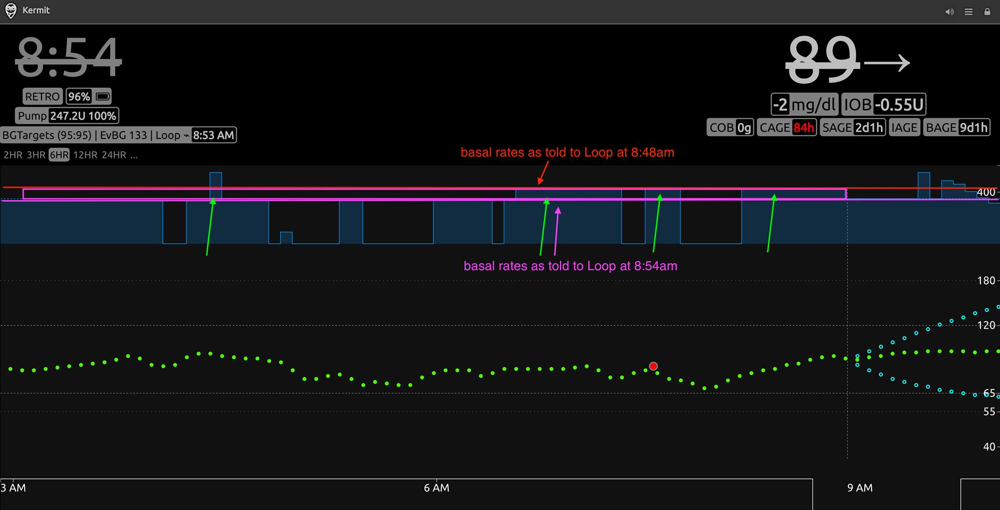
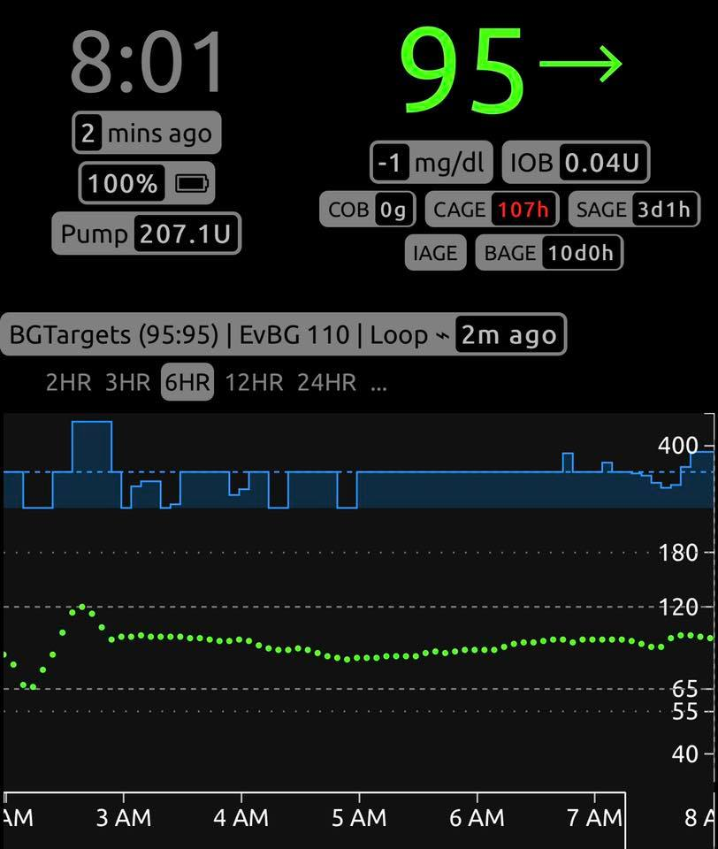

Using Morning IOB¶
One of the easiest habits to help check your settings is to simply check-in on your morning blood glucose and active insulin (IOB). Check if you are (1) above, below, or within target range and (2) carrying significant positive or negative IOB in the morning before you start walking around (if you are prone to dawn phenomenon) or eating. Since mornings are free from food influence, these are almost like waking up from a mini-basal testing every overnight.
This Looped group post started the conversation:
I've been having more lows recently than I would like. Any help here would be really really appreciated. I took a screenshot of an example situation...LOOP is predicting that I'll eventually rise up to 124 and is therefore giving me my full regular basal rate EVEN THOUGH im currently way below my desired goal range. I have a better knowledge of my diabetes than LOOP does (sorry if that is heresy around here) and I would not like LOOP to be giving me basal right now OR ELSE I'LL GO LOW. QUESTION: Which parameter must I change on my loop settings in order to essentially tell LOOP to relax on the basal rates??

To illustrate how to use morning IOB and blood glucose to check your basal rates, we will walk through a series of screenshots from a recent Loop experience. When the Looper woke up, she was below her 95 mg/dL target, but relatively steady. At about 8:48am, Nightscout showed negative IOB of -1.33 units, blood glucose of 90 mg/dL and slightly rising but still below a target of 95 mg/dL. (Note: this situation is similar to what the original Facebook poster above was describing.)

Looking back on the night, blood glucose was pretty much below target the whole night and her scheduled basal delivery was turning off/on in an alternating pattern (the blue pattern area). Blood glucose wasn't concerning nor were alarms going off. However, this combination of data is a great indicator that basal rates need to be decreased. The tendency could be to let Loop just keep plodding along like this, but it can lead to certain less than desirable stress points on the algorithm.
Firstly, if the user were to bolus while carrying a lot of negative iob, they would get more of a bolus than otherwise needed...yes, Loop will likely suspend again as soon the meal began because blood glucose spike would be well contained with the extra bolus, but the system would just have a harder time that it should with well tuned settings.
Secondly, if the user were to go above their correction range, they would begin to get high temporary basals for what is an inaccurate amount of negative iob (because basals really didn't need to be this high). And high temporary basals at this point in time and with these settings would be too aggressive. (If the maximum basal is set really high, the problem compounds with bad underlying settings. This is why it is a good idea to keep your maximum basal relatively low when you first start Loop and are testing your settings.)
Useful Summary
You probably need to lower your overnight basal rates if you wake up: * Carrying negative IOB, and * Blood glucose is still below or just below target, and * Overnight basals were turning off/on.
So, what will you see after you adjust your basal lower? You will see some of the negative IOB disappear and, as a result, the predicted blood glucose curve will not so such an aggressive prediction for a blood glucose rebound.
In this example, the user's basal rates were lowered across the board. All of the basal rates went down about 0.2 U/hr. It works out to about a 15% decrease, and is pretty standard adjustment for this user due to her monthly hormone changes.
The adjustment to basal rates caused Loop to reevaluate its math. After adjustment, Loop now has a negative IOB of -0.55 units vs the previous value of -1.33 units. This is a more reasonable given the situation. The prediction line with a -0.55 units IOB was not predicting nearly as aggressive of a "rebound" blood glucose rise.

Why did IOB and prediction change?
The visualization below might be easier. The red line is how loop knew things to be before basal rates were adjusted lower. The purple line is how Loop viewed basal schedule after the adjustment lower.

The green arrows highlight parts of the graph that are recalculated by Loop when the basal schedule was adjusted lower. Instead of Loop thinking those were NEEDED basals (aka, conforming to the old basal schedule), now Loop perceives those as "extra basal" insulin deliveries. Now those insulin deliveries are sitting ABOVE my scheduled basal dotted line in Nightscout. They are actually instances of positive IOB and therefore Loop is now correctly getting closer to realizing that perhaps all of that extra wasn't needed.

The negative/positive IOB plus a quick glance at overnight Loop actions/blood glucose relative to targets is a quick easy check on overnight basals.
If one was really exacting, you could adjust basals until a number closer to 0 IOB. In practical use though, getting roughly closer is usually helpful enough and smaller adjustments could be made later if still needed. The graph below shows the results several hours after the basals were decreased. As you can see, looking pretty decent.

The confirmation that adjustments were on-track would also be provided by looking at morning blood glucose and IOB the following morning. As you can see below, the user was at target blood glucose and carrying a very small amount of IOB. Also, there are far fewer instances of basals alternating off/on. All good signs that the basal adjustments were reasonable.

Note: This entire scenario can also be applied in the situations where (1) blood glucose has been steady but above target and (2) Loop is holding significant positive IOB, and (3) Loop has been high temping fairly consistently. By increasing the scheduled basals, Loop will recalculate that the positive IOB was actually necessary (not extra) insulin delivery, and the positive IOB will decrease. This will help the prediction curve to more accurately realize that not all the insulin deliveries were being utilitized as "corrections" but rather as needed background basal.